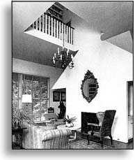

The interior of Tucker House is at once grand and intimate,
formal and relaxed. The wall behind the fireplace echoes the shape of the entire house. This miniature version of the whole house, in the
shape of the fireplace wall, is a mise en abîme. Hoem's novel, like Tucker House, also contains a house within the house (so to speak).

Tucker house interior, Katonah, New York |
| Kjærleikens ferjereiser is full of mise en abîme structures. |
Consider the "real world" to be the first narrative level or "diegesis". If you go into a movie theater, the movie is the second narrative level or "meta-diegesis." If a character in the movie tells a story, this is the third narrative level or "meta-meta-diegesis."
| Narrative Levels |
| Diegesis |
| Meta-diegesis |
Meta-meta-diegesis
|
Complicated blends of different narrative levels occur in movies like the Truman Show where the real world turns out to be fictional, the Purple Rose of Cairo where real characters enter the fictional film world, or Who Framed Roger Rabbit where real and fictional characters co-exist.
In Kjærleikens ferjereiser, there are three writers on three narrative levels. The multiplicity of narrative levels allows the possibility that events on different levels mirror each other. This repetition of motives or events on different narrative levels is called a mise en abîme. The novel even includes an inverse mise en abîme in the letter from Hans to the pregnant Marianne, explaining why he has to leave. The letter is written by Hans who is written by "he who writes" who is written by the implied author, but we read that neither the implied author nor "he who writes" can write the letter. The letter is also missing from the novel. When something recurs on more than one level of the narrative, it becomes a meta-problem. Kjærleikens ferjereiser is full of these.
|
|